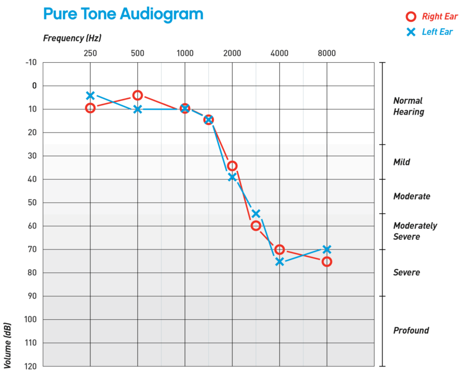

تحقیق
لگاریتم، ادراک و اطلاعات
چرا ادراک ما رابطهای لگاریتمی با تحریکات دریافتی از جهان دارد؟ سفری به دنیای روانفیزیک و قانون فشنر
ادامه مطالعهنوشتهها و مقالات در زمینه هوش مصنوعی، علوم کامپیوتر و تکنولوژی
چرا ادراک ما رابطهای لگاریتمی با تحریکات دریافتی از جهان دارد؟ سفری به دنیای روانفیزیک و قانون فشنر
ادامه مطالعه